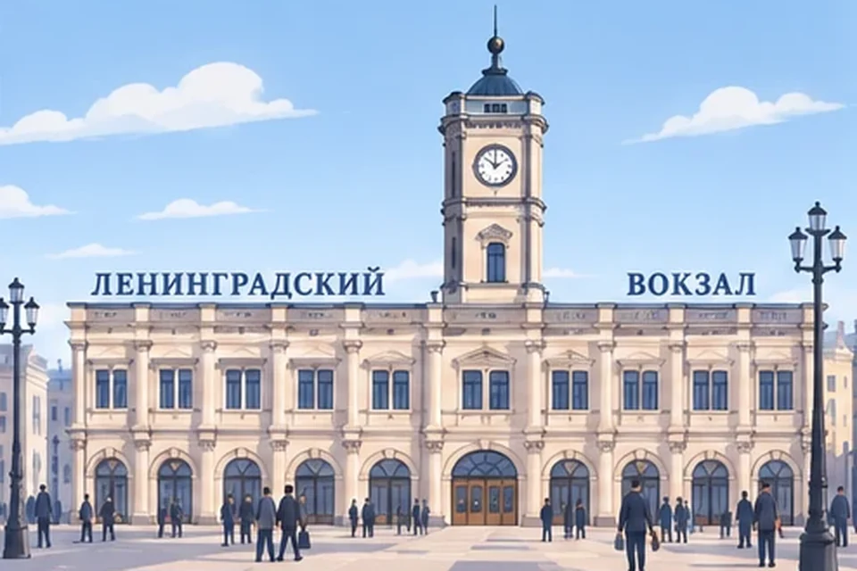
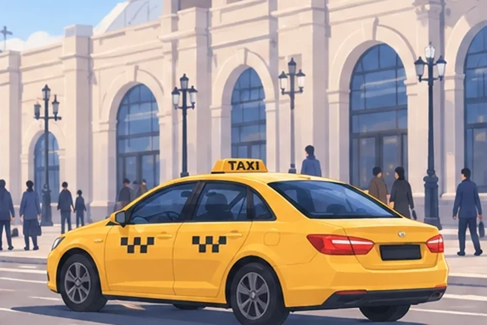
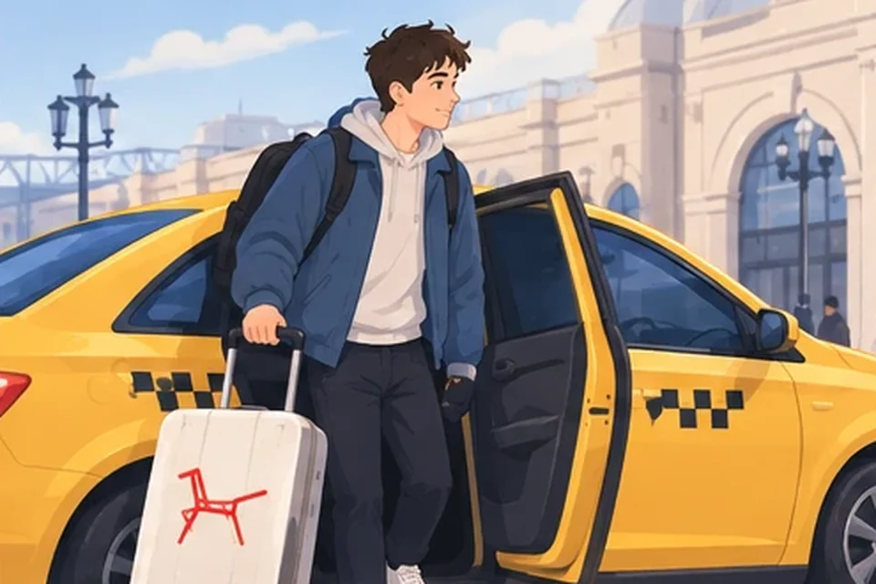
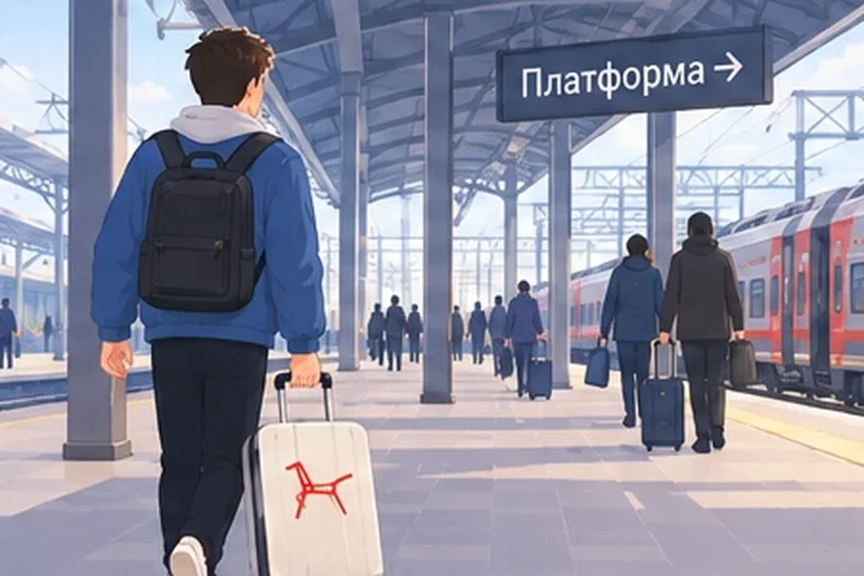
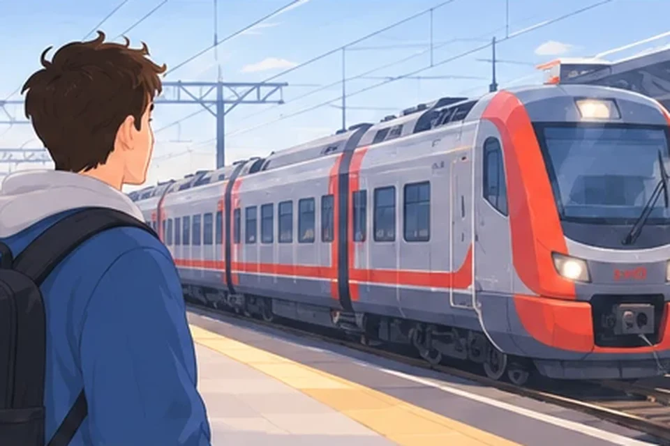
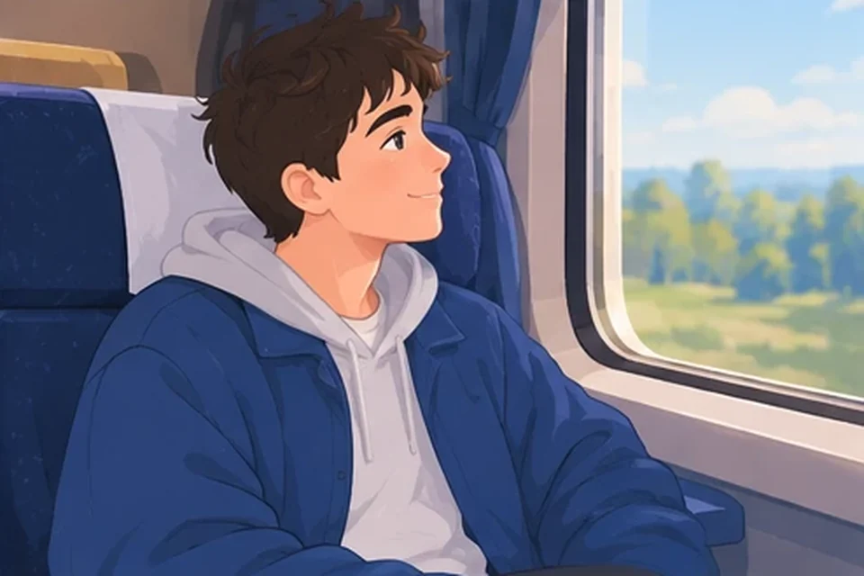
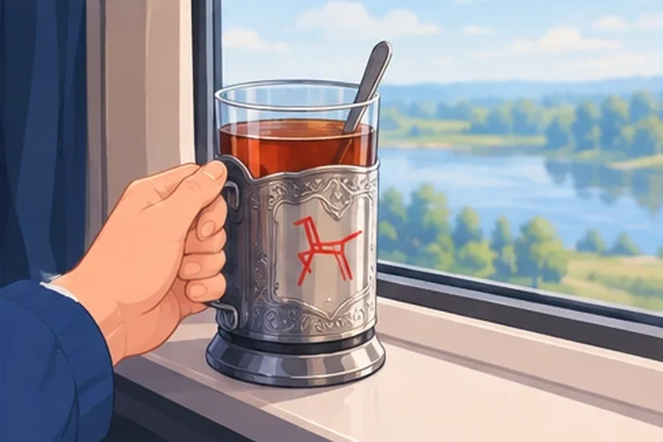
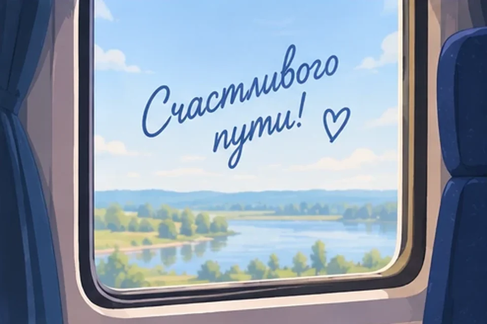

Кадр 1
Билеты
Нажми на билет с верным фактом — и продвинешься в путешествии. Билет с ложным фактом порвётся.








Нажми на билет с верным фактом — и продвинешься в путешествии. Билет с ложным фактом порвётся.